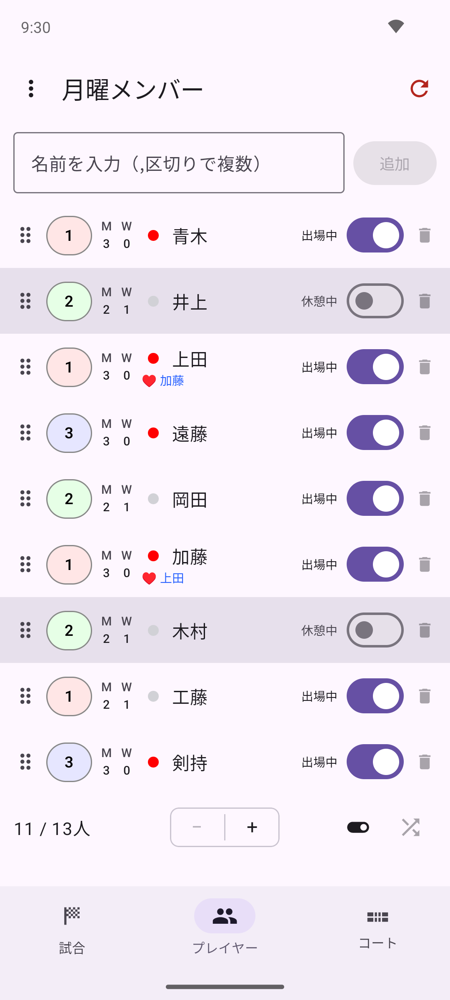
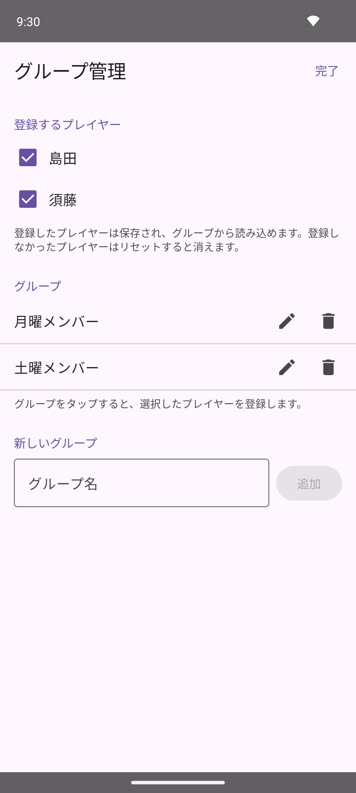

プレイヤータブ下部の ＋ / － ボタンをタップするだけで、プレイヤーの人数を簡単に増減できます（最低4人）。追加されたプレイヤーには、初期状態で「1」「2」「3」…という数字がそのまま名前として割り当てられます。特定の1人だけを削除したい場合は、編集画面右上のゴミ箱アイコン、またはリストの各行右端のゴミ箱アイコンから削除できます。
追加 をタップすると、名前付きでプレイヤーを追加することもできます。カンマ区切りで複数名を一度に入力できます（例：Alice, Bob, Carol, Dave）。プレイヤータブ右上の ↻（リセット）アイコンをタップすると、確認アラート「プレイヤーをリセット」が表示されます。リセット を選ぶと、現在登録されているプレイヤーと試合結果がすべて削除され、初期状態の4人にリセットされます。
⋮ メニューの 保存 で保存済みのメンバーデータベース自体は影響を受けませんが、現在のプレイヤーリストと試合結果は失われます。↻ ボタン（ゲーム情報を削除）とは異なり、こちらはプレイヤー自体も削除されます。試合結果だけを消したい場合はゲームタブのリセットをご利用ください。プレイヤータブで各プレイヤー行右端のトグルが出場状態を表します。トグルをオフにすると休憩中となり、そのプレイヤーは次の組み合わせから除外されます。復帰するときはトグルをオンに戻してください。

プレイヤータブでプレイヤーの行をタップすると編集画面が開きます。名前 フィールドを編集してください。フィールドをタップして入力中は、右端に表示される × ボタンで入力内容を一括消去できます。

各プレイヤーには 1・2・3 のレベルを設定できます。プレイヤータブのリスト左端にあるレベルバッジをタップするたびに 1→2→3→1 と切り替わります。編集画面の レベル からも変更できます。

レベルはコートへの割り当てに使用されます。詳しくは「高度な使い方」をご覧ください。
毎回欠席することが多いメンバーには、編集画面の デフォルト欠席 をオンにしておくと、メンバーデータを読み込んだ際に自動的に休憩状態でリストに追加されます。
編集画面の ペア セクションから、常に同じペアを組むプレイヤーを指定できます。固定されたペアはプレイヤー名の横に ♥ マーク付きで表示されます。
プレイヤータブのリストで、プレイヤー名の左に丸印が表示されます。赤丸は現在進行中の試合に出場していることを示し、グレーの丸はそれ以外（次の組み合わせ待ちや休憩中など）を示します。

丸印をタップすると、そのプレイヤーはピン留め状態になり、丸印の代わりにピンのアイコンが表示されます。ピン留めされたプレイヤーは、待ち回数に関わらず次の組み合わせで最優先に選ばれます。もう一度ピンのアイコンをタップすると、ピン留めが解除されて丸印表示に戻ります。

プレイヤータブ左上の ⋮ メニューから以下の操作ができます。

メンバーをグループに分類して保存しておくと、曜日や練習会ごとに異なるメンバーをすばやく読み込めます。
グループ名を作成する — ⋮ メニューの グループ管理 を開き、グループ名 フィールドに名前を入力して 追加 をタップします。

プレイヤーにグループを設定する — プレイヤー編集画面の グループ セクションで、そのプレイヤーを所属させたいグループのトグルをオンにします（グループが1つも作成されていない場合、このセクションは表示されません）。

グループを割り当てたら、⋮ メニューの 保存 でメンバーデータベースに保存してください。

組み合わせはプレイヤーリストの並び順をもとに決まります。同じメンバーで練習を重ねていると、ゲームタブの ↻ でゲームを初期化するたびに、毎回同じ組み合わせから始まってしまうことがあります。プレイヤータブ下部のシャッフルアイコン（🔀）をタップすると、プレイヤーの名前・レベル・出場設定などをリスト内でランダムに入れ替え、次の組み合わせの偏りを防げます。
↻ リセットボタンで初期化してください。